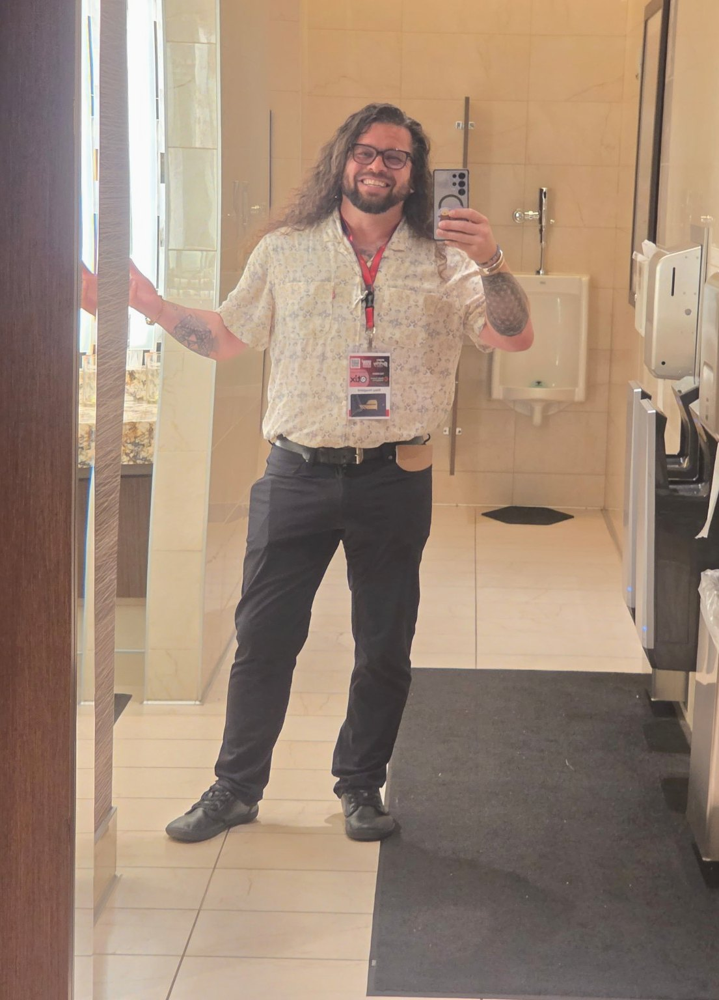

My painting practice spans years and has included a successful public show. The work is visual, physical and rooted in experiences that sometimes arrive before language.
ABOUT RILEY
Built a little differently.
Real estate is one part of a much bigger life — and that broader experience shapes how I see property, people and the Oregon Coast.

THE SHORT VERSION
Local knowledge without the costume.
I'm based in Lincoln City and serve buyers and sellers throughout the Central Oregon Coast as a broker with Oregon Life Homes. I've been licensed since 2018, but my perspective on property started long before that.
I spent years working in the construction trades, including framing, finish carpentry, deck building and glazing. That taught me to look past finishes and ask how something was built, how it has weathered, and what may matter five or ten years from now.
PLACE + PEOPLE
The coast is more than scenery.
Coastal real estate comes with its own realities: salt, wind, water, topography, zoning, short-term-rental rules, HOAs, insurance and infrastructure. Years of public service and land-use experience give me additional context for those conversations without pretending every question has a simple answer.
My approach is straightforward: communicate clearly, notice what matters, and help clients make decisions they actually understand.
ACTUALLY ME
Professional doesn't have to mean generic.
I have long hair, a beard, piercings and a lot of tattoos. I'm also a builder, artist, writer, inventor, father and public servant. None of that gets checked at the door when I work in real estate — it informs the way I relate to people and the way I look at problems.
Clients aren't hiring a costume. They're hiring judgment, communication, local knowledge and somebody they can trust when the decision gets complicated.
MORE THAN REAL ESTATE
Artist. Writer. Inventor.
Creativity isn't a side project for me. It's part of how I notice, solve and communicate.
I'm a published poet with multiple books. Writing became another way of paying attention to relationship, memory, place and what it means to live deliberately.
I created Trezur Bag after seeing a practical problem and wanting a better answer. That instinct — observe, understand, build — follows me everywhere.
“A practical eye for property. A deeper feel for place.”
WORK WITH RILEY